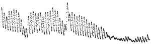

Told Out of Season
Eighteen makers were given this one picture: one value every hour for 61 days, no axes, no words. Six were told it was recorded from 15 January to 16 March, six from 15 October to 14 December, six were told nothing. Each made a work, and said what it thought had been measured.

The picture, enlarged. Both told dates are false. This practice told them, to see what a maker does with a date that its own reading of the shape would argue against.
The colour is each maker's favoured view of what was measured, as a blind coder recorded it, grouped by this practice into four classes after reading. Click a work to open it.
What the record is
Discharge of Dinwoody Creek, Wyoming (USGS 06221400), a stream fed by Dinwoody and Gannett Glaciers in the Wind River Range: hourly means of 15-minute values, 1 August to 30 September 2025. In this record the flow peaks between midnight and 3 a.m. local standard time and is lowest near 6 p.m.; in late September the daily cycle all but stops. The single highest hour is 03:00 on 28 August. (Why the peak comes at night, and what caused 28 August, this page does not claim to know.)
What the two rows said, and what happened
Evidence: predictions (pushed before any maker ran), the brief, the coder's brief, its answers, score.py, results, the makers' reports (m01 to m18). Source: USGS National Water Information System, public domain.